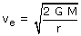
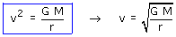
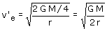

|
|
La velocidad de escape de la Tierra es:

La velocidad de la Tierra en su órbita alrededor del Sol normal vale:

La velocidad orbital de la Tierra es menor que la velocidad de escape del Sol, por eso la Tierra se mantiene girando alrededor de este.
Si la masa del Sol se redujera a la cuarta parte, la velocidad de escape pasaría a ser:

Suponiendo que el proceso que redujo la masa del Sol no
afectase a la velocidad de la Tierra resulta que la velocidad de esta
sería mayor que la nueva velocidad de escape del Sol.
El Sol no tiene masa suficiente para retener la Tierra y esta escapará.